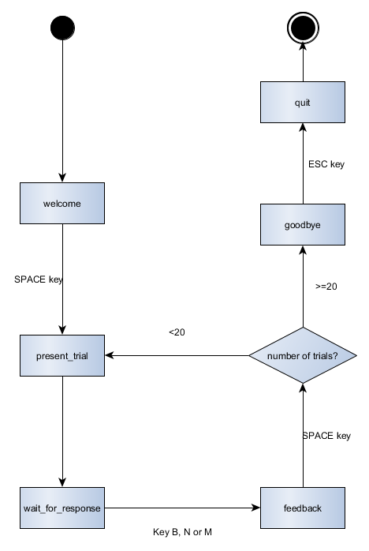
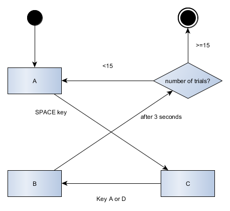
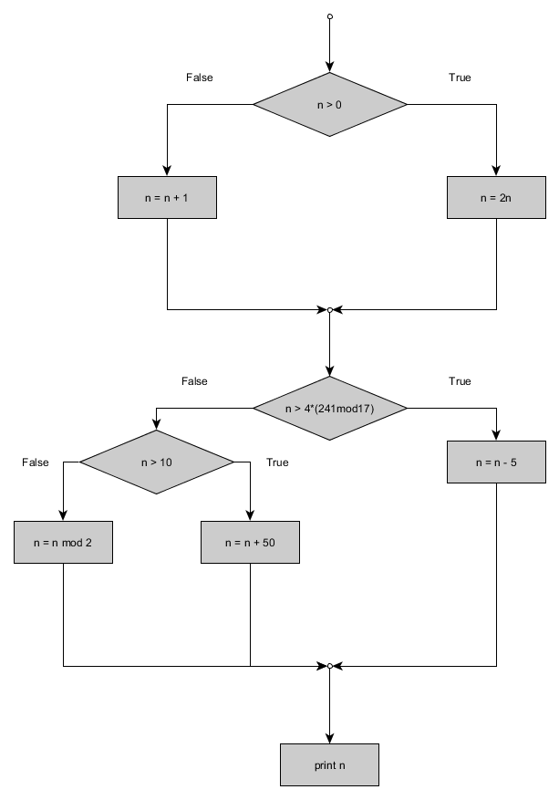

if 1 == 1:
print('Hello World')Hello Worldif 1 == 1:
print('Hello World')Hello WorldIn Chapter 2 Variables, you read about simple Boolean expressions that produce Boolean values (True, False) with the help of comparative operators (==,!=,>,<,>=,<=). In this chapter, we will first take a closer look at Boolean expressions as we work towards introducing the main actor in regulating the flow of a computer program, conditionals. In chapter 1 [Introduction] you took a closer look at the Stroop Task program. You saw that the program shifts between different stages of the Stroop experiment, among which preparing a trial and waiting for the participant’s response. These experimental stages are mirrored in the different states of the Stroop Task program. A simple lamp, for example, can be regarded as having two possible states, namely being either switched on or off. The Stroop Task program knows more states than simply being switched on or off, but just as a simple lamp, it needs some kind of switch to transit from one state to another. This is were conditionals come in handy as you will see at the end of this chapter. But first things first, let’s take a look at the following two examples:
print(10 > 5 and 5 > 2)Trueprint(True or False)Trueprint(True and not False)Trueprint(not True and False)Falseand, or, and not are the three logical operators used in Python. They allow us to build more complex Boolean expressions from simpler ones. Sometimes these operators confuse people because they are used differently in informal language. Therefore, it is important to understand what they formally mean in Python (and math and all other programming languages). The following truth table displays what these operators exactly mean for two variables a and b for all combinations of values:
| a | b | not a | a and b | a or b | not a or b |
|---|---|---|---|---|---|
| True | True | False | True | True | True |
| True | False | False | False | True | False |
| False | True | True | False | True | True |
| False | False | True | False | False | True |
There exists a set of rules for working with Boolean values, much like highschool mathematical algebra. First of all, the logical operators and, or, and not differ in their priority. In highschool, you learned that given a formula a + b * c, you first multiply b and c before adding a. This is the same as saying that * has a higher precedence than +. From highest to lowest the precedence ranking for the three logical operators is: not, and, or. In addition, the six comparative operators (==,!=,>,<,>=,<=) precede all logical operators.
As in mathematics, brackets can be used to change the order of operations.
print(not True or 1 == 1)TrueAlso notice that
print(not True and False)Falseis not the same as
print(not (True and False))TrueFinally, in Python code you will frequently encounter numerical values as part of Boolean expressions, such as in the following:
trial = 3
max_trials = 6
correct = True
print((max_trials - trial) and correct)TrueHere, the numerical expression is evaluated in the context of the Boolean operator and and is converted to Boolean. When that happens, zero becomes False and any other value becomes True, including negative values :
print(-2 and True)TrueThat may not be what you expected, and the whole situation with implicit typecasts to Boolean is even worse, as the typecast depends on the order.
print(True and 2)2Certainly, there are some reasons, why Python behaves that way, but it is far from being intuitive (breaking the law of commutivity for the and operator!). Therefore one should always use explicit Boolean expressions, such as the following:
trial = 3
max_trials = 6
correct = True
print((max_trials - trial) > 0 and correct)TrueBoolean values are essential for regulating the flow of a computer program as they provide the conditions under which certain blocks of code are executed. The simplest form of a conditional is the if statement.
a = 0
if (a < 0):
print("a is smaller than 0")
if (a >= 0):
print("a is larger than, or equal to 0")a is larger than, or equal to 0You can read if statements as
If whatever is written within the curved brackets equals
True,
then, and only then, the intended (from intendation, not intention!) code within the statement is evaluated.
An if statement consists of a header and a body. The header begins with the keyword if, followed by a Boolean expression (the condition) and ends with a colon (:). The brackets around the condition are optional, but recommended to facilitate readability. Only if the given condition in the head is met, the program will read and execute the code written in the statement’s body. Note that Python requires that the statements written in the body of an if statement are indended consistently (commonly by four spaces). The intended statements are called a block and the first unintended statement designates the end of the block. The usefulness of intendation may at first not be apparent to you, but trust me, it facilitates reading complex programs enormously.
Actually, you can simplify the code above by using an else clause:
a = 0
if (a < 0):
print("a is smaller than 0")
else:
print("a is larger than, or equal to 0")a is larger than, or equal to 0But, take great care: the conditions a < 0 and a >= 0 are special in that they are:
else clauses are optional, but they often simplify your code. If you are dealing with two complete, mutually exclusive conditions, then using an if/else clause is the way to go. If there are more than two choices, you can either use nested conditionals or if ... elif ... else:
a = 0
if (a < 0):
print("a is smaller than 0")
else:
if (a == 0):
print("a equals 0")
else:
print("a is larger than 0")a equals 0The indentation makes the structure of the program visible. However, most of the time, nested conditionals complicate your code unecessarily, making it more difficult to read. It is commonly regarded as good practice to keep the usage of nested conditionals to a minimum.
Then again, how do you implement more than two execution branches, without resorting to nested conditionals? Let’s pretend that it is incredibly important to your program that it does make a difference between the case that a is larger than 0, compared to when a equals 0.
a = 0
if (a < 0):
print("a is smaller than 0")
elif (a == 0):
print("a equals 0")
else:
print("a is larger than 0")a equals 0The elif statement (short for else if statement) allows you to include more than two alternative conditions. In theory, you can build an endless chain of alternative conditions using elif. Whether it is useful to do so, is, of course, a different question. Whenever elif is included in a train of conditions, the whole structure is called a chained conditional. Note that when using an else clause in a chain of conditionals, it always marks the end of the chain. Furthermore, each condition is checked in order. If the first is False, the next is checked, and so on. Note that only the first True branch is executed, even if more than one condition is True. There is nothing like “more true” in Boolean logic.
a = 1
if (a >= 0):
print("a is greater than or equals 0")
elif (a == 1):
print("a equals 1")
else:
print("a is smaller than 0")a is greater than or equals 0Alternatively, nesting can often be circumvented by combining simple Boolean expressions using logical operators:
a = 5
if (a > -5):
if (a >= 0):
print("a is a positive digit")a = 5
if (a > -5 and a >= 0):
print("a is a positive digit")In programming interactive software, such as the Stroop experiment, conditionals are essential to control the flow of the program. By controlling the flow, we mean how the program changes states in reaction to the input of the user. Without the programmer’s intervention, a program is executed from top to bottom. You can imagine that the Stroop Task program needs to be more flexible than that, depending on the actions of the participant. Take a closer look at how the Stroop Task program transits from the welcome screen to the first trial:
STATE = "welcome"
if STATE == "welcome":
if event.type == KEYDOWN and event.key == K_SPACE:
STATE = "prepare_next_trial"
print(STATE)In plain English, this would be the same as telling the program to switch from state "welcome" to state "prepare_next_trial" upon pressing the SPACE key. To see this in action, run the Stroop Task program, and watch closely what is printed to the console. You will see that whenever the program transits into a new state, the state of the program is printed to the console.
In the previous section, you saw how conditionals regulate the flow of a computer program. Depending on specific user actions, the state of the program transits into another state. When you first encounter the code of an interactive program such as the Stroop Task program, writing out all possible state transitions in a transition table helps to understand the structure of the program. A transition table lists all states against each other in a table and documents how the program transits from one state to another. The empty transition table for the Stroop Task program is shown below.
| welcome | present_trial | wait_for_response | feedback | goodbye | quit | ||
|---|---|---|---|---|---|---|---|
| FROM | welcome | ||||||
| present_trial | |||||||
| wait_for_response | |||||||
| feedback | |||||||
| goodbye | |||||||
| quit |
By taking a close look at how the Stroop Task program transits from one state to another, the transition table can be filled in. The changing state part of the Stroop Task program is displayed below, together with the completed transition table for the Stroop Task program.
KEYS = {"red": K_b,
"green": K_n,
"blue": K_m}
# Changing states
for event in pygame.event.get():
if STATE == "welcome":
if event.type == KEYDOWN and event.key == K_SPACE:
STATE = "present_trial"
print(STATE)
if STATE == "present_trial":
trial_number = trial_number + 1
this_word = pick_color()
this_color = pick_color()
time_when_presented = time()
STATE = "wait_for_response"
print(STATE)
if STATE == "wait_for_response":
if event.type == KEYDOWN and event.key in KEYS.values():
time_when_reacted = time()
this_reaction_time = time_when_reacted - time_when_presented
this_correctness = (event.key == KEYS[this_color])
STATE = "feedback"
print(STATE)
if STATE == "feedback":
if event.type == KEYDOWN and event.key == K_SPACE:
if trial_number < 20:
STATE = "present_trial"
else:
STATE = "goodbye"
print(STATE)
if event.type == QUIT:
STATE = "quit"| welcome | present_trial | wait_for_response | feedback | goodbye | quit | ||
|---|---|---|---|---|---|---|---|
| FROM | welcome | SPACE | |||||
| present_trial | auto | ||||||
| wait_for_response | b OR n OR m | ||||||
| feedback | SPACE | SPACE | |||||
| goodbye | |||||||
| quit |
The transition from state present_trial to state wait_for_response occurs automatically once all preparations for the trial are finished. Generally, we distinguish between two types of transitions, interactive changes (ITC) and automatic changes (ATC). While an input from the user is required in interactive state transitions, the program changes from one state to another on its own in automatic transitions. It is generally a good idea to separate ITCs from ATCs in your code to make the structure of your program more apparent.
Apart from understanding another’s code, transition tables are also useful when you conceive your own program. They serve as an interaction skeleton to which you gradually add functionality as you develop your program.
State charts are another tool for representing the interaction of a program. They are especially useful for developing your own programs. State charts serve as a blueprint. They depict the basic structure of your program to which you gradually add functionality. It helps to keep the basic functionality in sight while developing. You can easily get lost in small, optional features while the basic structure of your program is still unfinished. Below you see a state chart of the interaction in the Stroop Task program. States are shown as squares and conditions as diamonds. Arrows indicate the flow of the program, their labels give more information about state transition changes. Note how the state transition from present_trial to wait_for_response has no label. When you look into the code of the Stroop Task program, you will notice that the transition between these states is automatic with no further condition to be fulfilled.

=) with the comparative equals operator (==).a = 5
if (a = 5):
print("Yes, a is indeed equal to 5!")print("Error: invalid syntax (<string>, line 2)")[1] "Error: invalid syntax (<string>, line 2)"Yes, confusing the assignment operator with the comparative equals operator will be a re-occuring issue. For human beings it is just too easy to type = when they actually mean == in Python. Being a psychologist, go figure.
if statement.if (1 == 1)
print("Hello, World!")print("Error: invalid syntax (<string>, line 2)")[1] "Error: invalid syntax (<string>, line 2)"Whenever you encounter a syntax error in your conditionals, you should first check whether you forgot a colon.
if (1 == 1):
print("Hello, World!")if clauses in a chain of conditionals. This is a tricky one because the consequences may not immediately be apparent. Plus, no error is necessarily thrown. Still, you program somehow does not do what you expect it to do. In truth, exclusively using if clauses is not wrong in itself; but chances are high that you intended to use a chain of if/elif clauses instead. Let’s take a look at the following two code snippets to illustrate the difference between a chain of if clauses and a chain of if/elif clauses.a = 6
if (a % 2 == 0):
print("a is divisible by 2")
elif (a % 3 == 0):
print("a is divisible by 3")
elif (a % 6 == 0):
print("a is divisible by 6")
else:
print("a is not divisible by 2, 3 or 6")a is divisible by 2a = 6
if (a % 2 == 0):
print("a is divisible by 2")a is divisible by 2if (a % 3 == 0):
print("a is divisible by 3")a is divisible by 3if (a % 6 == 0):
print("a is divisible by 6")
else:
print("a is not divisible by 2, 3 or 6")a is divisible by 6As you can see, in the first code snippet, only the first True conditional branch is executed, although 6 is obviously not only divisible by 2, but also by 3 and 6. In the second code snippet, however, all True conditions are executed consecutively. Why is that? Well, in the first code snippet we are dealing with one single if statement or conditional with several subclauses ( the elif and else clauses), while the second code snippet strictly speaking consists of three individual if statements. These three conditionals are independent from each other and as such, are executed independently from each other. The first code snippet is read as “if a modulo 2 equals 0 (which is the same as saying ‘if a is divisible by 2’), then print this or that; however, if (and only if) a is not divisible by 2, then look for a different True condition”. In contrast, the second code snippet reads as “if a is divisible by 2, print this or that. Full stop. If a is divisible by 3, print this or that. Full stop. If a is divisible by 6, print this, else print that”. In a chain of if clauses the individual clauses are disconnected, which is why they are read as a summation of individual clauses rather than one coherent statement.
You may ask yourself why this is included in the Common errors section. After all, using exclusively if clauses is not necessarily “wrong”. The problem is that exclusively using if clauses may do the job at the beginning of your programming career, but it is a source for complex errors at a later stage. Remember to use chains of if/elif/else clauses whenever you want to need to make sure that only one True condition is executed at a time.
tabs and spaces interchangably to indent your code. To be honest, your Python compiler may not complain immediately when you mix tabs and spaces. However, there are good reasons why you do not want to do this anyway:tabs and spaces. This makes subsequent programming efforts a quite error-prone activity. For example, you are more likely to make indentation errors when you use tabs and spaces carelessly. And believe me, your Python compiler will throw an error at any of those!In addition to some general good debugging practices summarized in the chapter on Debugging, there are some strategies that are especially useful when dealing with errors originating from conditionals in your program.
Again, checking your assignment = and equals == operators is a good starting point when you encounter an error that you suspect to originate from your conditionals. Using an assignment = operator where an equals == operator is needed will throw a syntax error and vice versa. While you are busy checking your assignment and equals operators, also check whether you forgot any colons : at the end of the first line of your if statements. This will also throw a syntax error.
Take a good look at the conditions in your if statements. You can check a variety of conditions interactively in your Python console outside of the program. Check whether the Boolean expressions in your conditions do indeed evaluate as you expect them to. Or would you immediately know what True + 1 == False + 2 evaluates to? I still check what my conditions evaluate to when I am not a hundred percent sure. There a countless reasons why a condition may not evaluate as you intended. The variables you include in your condition may have unexpected values or subclauses of your condition may evaluate in a different order than you intended. You should take a look at how the variables you use in your conditions were assigned their respective values. If they are assigned unexpected values, you should look further upwards in the program’s flow. Also check the precedence of your operators when you use several rather than a single one in your conditions. Use brackets () to enforce a certain operator order, if necessary.
You should also consider simplifying your conditionals. The more complex your conditionals, the more prone you are to making mistakes. Simplifying deeply nested conditionals can solve programming errors that are otherwise difficult to track down.
What is the output of the following code snippets?
a = True
b = False
print(a and b)a = True
b = False
print(not a and b)a = True
b = False
print((not a) or b)a = True
b = False
print(not (a and b))a = True
b = False
print(not (a or b))a = 1
b = 2
c = 4
print(a >= b and c > a + b)a = 1
b = 2
c = 3
print(b % a >= c - (a + b))A state chart visualizes the interaction of a program. Which of the code snippets matches the state chart?

# Variables
STATE = "A"
number_of_trials = 0
while True:
#ITC
for event in pygame.event.get():
if STATE == "A":
number_of_trials = number_of_trials + 1
if event.type==KEYDOWN and event.key == K_SPACE:
STATE = "C"
elif STATE == "C":
if event.type==KEYDOWN and event.key == K_A or event.key == K_D:
arrival_at_B = time()
STATE = "B"
#ATC
if STATE == "B":
if time() - arrival_at_B > 3:
STATE = "number_of_trials"
elif STATE == "number_of_trials":
if number_of_trials < 15:
STATE = "A"
else:
pygame.quit()
sys.exit()# Variables
STATE = "A"
number_of_trials = 0
while True:
#ITC
for event in pygame.event.get():
if STATE == "A":
number_of_trials = number_of_trials + 1
if event.type==KEYDOWN and event.key == K_SPACE:
STATE = "C"
elif STATE == "C":
if event.type==KEYDOWN and event.key == K_A and event.key == K_D:
arrival_at_B = time()
STATE = "B"
else:
arrival_at_B = time()
STATE = "B"
#ATC
if STATE == "B":
if time() - arrival_at_B > 3:
if number_of_trials < 15:
STATE = "A"
else:
pygame.quit()
sys.exit()# Variables
STATE = "A"
number_of_trials = 0
while True:
#ITC
for event in pygame.event.get():
if STATE == "A":
number_of_trials = number_of_trials + 1
if event.type==KEYDOWN and event.key == K_SPACE:
STATE = "C"
elif STATE == "C":
if event.type==KEYDOWN and event.key == K_A or event.key == K_D:
arrival_at_B = time()
STATE = "B"
#ATC
if STATE == "B":
if time() - arrival_at_B > 3:
if number_of_trials < 15:
STATE = "A"
else:
pygame.quit()
sys.exit()For the following code snippet, make a transition table.
STATE = "A"
while True:
#ITC
for event in pygame.event.get():
if STATE == "A":
count = 0
if event.type == KEYDOWN and event.key == K_w:
STATE = "B"
print(STATE)
elif STATE == "B":
count = count + 1
if event.type == KEYDOWN and event.key == K_a:
timer = time()
STATE = "C"
print(STATE)
elif STATE == "D":
if event.type == KEYDOWN and event.key == K_SPACE:
if count < 10:
STATE = "B"
else:
STATE = "quit"
print(STATE)
#ATC
if STATE == "C":
present_picture()
if time() - timer > 3:
STATE = "D"
print(STATE)
elif STATE == "quit":
pygame.quit()
sys.exit()What is the output of the following mini programs?
x = 5
y = 0
if x >= 5 and y != False:
print(y/x)
0TypeError, numerical and Boolean values cannot be comparedx = 12
if x%3 == 0:
print("x is divisible by 3")
elif x%4 == 0:
print("x is divisible by 4")x is divisible by 4x is divisible by 3x is divisible by 4x is divisible by 3x = 2
y = 0
if y + 1 == x or not x * 1 <= y:
print(x + y)SyntaxError, you need to use brackets if you mix different operator types in one condition2Read the following program code and try to follow its control flow. Write down the content of each print statement. Check your answers with the help of your python editor. Hint: spaces also add to the length of a string (as measured by the len() method)!
myString = "Hello, World!"
if len(myString) >= 13 or "ello" in myString:
myString = "Hi, programming aspirant!"
elif len(myString) <= 12 and "ello" in myString:
myString = "Hello, from the other side."
print(myString)
if "Hi" in myString:
if len(myString) < 25:
myString = "Wow, my computer seems to answer!"
elif len(myString) > 25:
myString = myString + " -- Your computer"
else:
myString = myString + " How are you?"
else:
if len(myString) <= 29:
myString = "How are you, my computer?"
elif len(myString) == 27 and "Hello" in myString:
myString = myString + " I must have called a thousand times."
else:
myString = myString + " -- Adele"
print(myString)
if "computer" in myString or len(myString) == 38 or "HI" in myString:
myString = myString + " I myself am doing fine."
else:
myString = myString + " I am doing just fine."
print(myString)Copy the following piece of code and run it. Correct all indentation errors until the code runs error-free.
a = 4
if a < 20 and a > 0:
if a > 0 and a < 15:
a = a + 3
else:
a = a - 3
print("This is a dead end statement.")
elif a > 20:
print("This should only be printed if a exceeds 20!")
else:
a = 17Translate the following common language sentences into pseudo code conditionals as in
if rain
set umbrella to TruePseudo code is a programming language-independent informal and simplified description of the essential operating principles of a computer program. It adheres to the structural conventions of a normal programming language, but it is rather meant for the human reader than machine reading. Pseudo code is commonly used for sketching out the structure of a computer program before the actual code writing takes place. You can find a more detailed description of what pseudo code is and some examples of written pseudo code here.
Add a conditional to the interactive Stroop experiment so that in case the participant’s reaction time exceeds 5 milliseconds, “Come on, you can be faster!” is printed to the screen
Hints:
First think about where in the program you need to make changes to print the message
Formulate the if statement or mutate existing if statements to fit your needs
Use the existing program code as a template for drawing the message
For a research project, you want to examine to what extent gender affects the influence of coffee on a person’s performance on a vigilance task. You perform matching during sampling. All females will be grouped together, and all males will form one condition.
The code below represents a decision tree that matches a candidate participant on the basis of their personal details with either condition A (for females) or condition B (for males). In addition, the decision tree raises a warning if the candidate does not meet at least one of the requirements for participation.
As is, the code is quite complex, including a lot of redundant lines and unneccessary nested conditionals. First, read the code carefully to figure out the requirements a candidate participant has to meet in order to participate in the study. Then, simplify the code while maintaining its functionality.
### participant details ###
age = 20
gender = "Male"
study = "Psychology"
speaks_Dutch = True
coffee = True
condition = "not eligible for the experiment"
if age >= 18:
if gender == "Female":
if study == "Communication Sciences":
if speaks_Dutch == True:
if coffee == True:
condition = "A"
elif coffee == False:
print("Participant is not eligible to take part in the experiment.")
elif speaks_Dutch == False:
print("Participant is not eligible to take part in the experiment.")
elif study == "Psychology":
if speaks_Dutch == True:
if coffee == True:
condition = "A"
elif coffee == False:
print("Participant is not eligible to take part in the experiment.")
elif speaks_Dutch == False:
print("Participant is not eligible to take part in the experiment.")
elif study != "Communication Sciences" and study != "Psychology":
print("Participant is not eligible to take part in the experiment.")
elif gender == "Male":
if study == "Communication Sciences":
if speaks_Dutch == True:
if coffee == True:
condition = "B"
elif coffee == False:
print("Participant is not eligible to take part in the experiment.")
elif speaks_Dutch == False:
print("Participant is not eligible to take part in the experiment.")
elif study == "Psychology":
if speaks_Dutch == True:
if coffee == True:
condition = "B"
elif coffee == False:
print("Participant is not eligible to take part in the experiment.")
elif speaks_Dutch == False:
print("Participant is not eligible to take part in the experiment.")
elif study != "Communication Sciences" and study != "Psychology":
print("Participant is not eligible to take part in the experiment.")
else:
print("Participant is not eligible to take part in the experiment.")Turn the following flow chart into a python script and run it. Given that the initial value of n is -1, what is the final value of n?
